One integrated assembly
The high-pressure pump and energy recovery motor are mechanically coupled. The recovery function needs no separate electric drive or separate pressure-boost pump.
Seawater reverse osmosis
More production. Same integrated approach.
A seawater RO power centre that combines an axial piston pump with an energy recovery motor, using pressure in the reject brine to help drive the pump. Production capacity up to 390 m³/day.
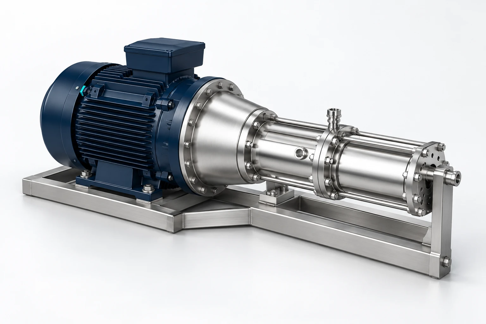
Recover pressure. Reduce demand.
Reverse osmosis leaves useful pressure in its reject stream. The Power Centre captures that energy through an axial piston motor and returns it to the pump’s drive shaft, reducing the load on the electric motor.
The high-pressure pump and energy recovery motor are mechanically coupled. The recovery function needs no separate electric drive or separate pressure-boost pump.
Duplex shafts, pistons and housings provide the stated material basis. Water lubricates the bearing surfaces, eliminating lubricating-oil changes within the pump and recovery unit.
Specify flow, salinity, temperature and recovery together. Shaft speed controls output flow, while the recovery ratio is configured at the order stage.
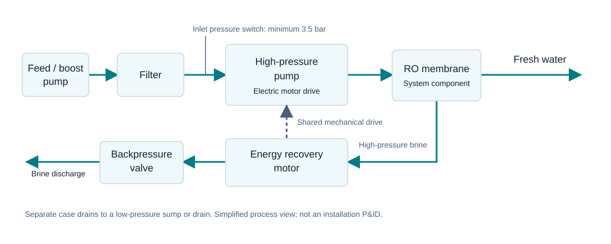
Energy recovery can reduce power demand compared with a pump-only arrangement. Actual motor power and freshwater production depend on the selected duty; use the model curves and an engineering review to establish your operating point.
Technical overview
Specification values are a selection starting point. Confirm the final operating envelope and connection details for your installation.
Model performance
Explore flow, freshwater production and power demand. Recovery curves are reference data, not a guarantee of membrane-system output.
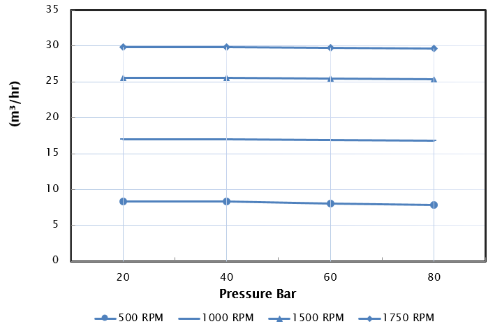
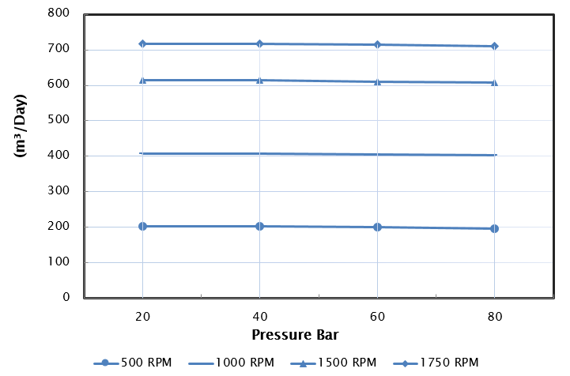
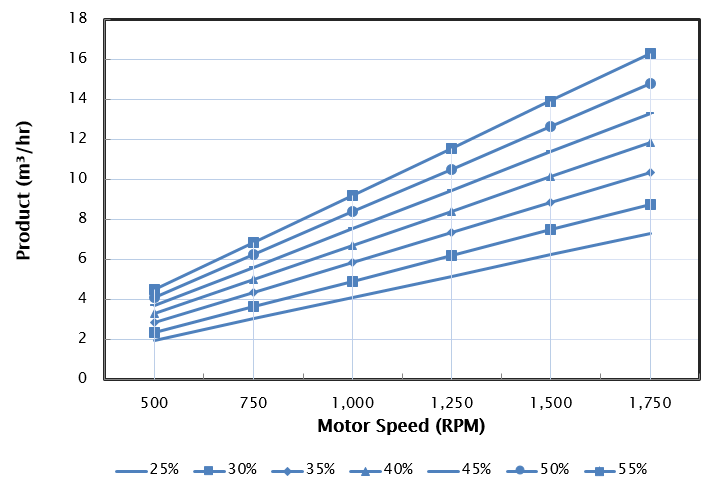
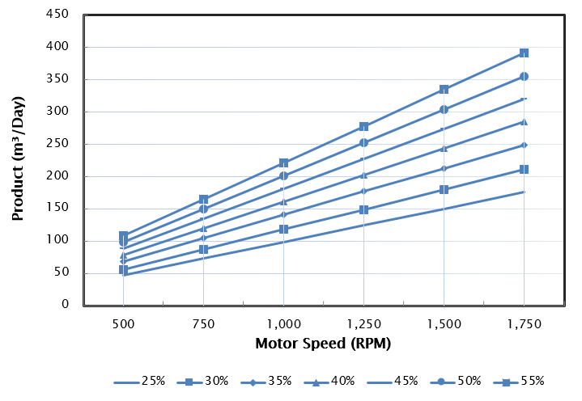
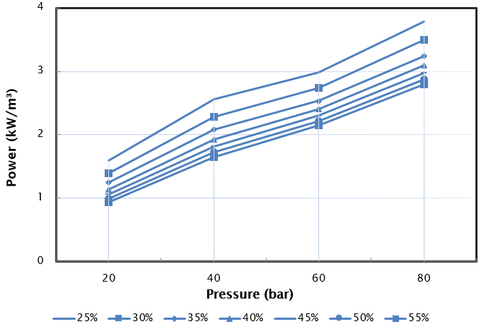
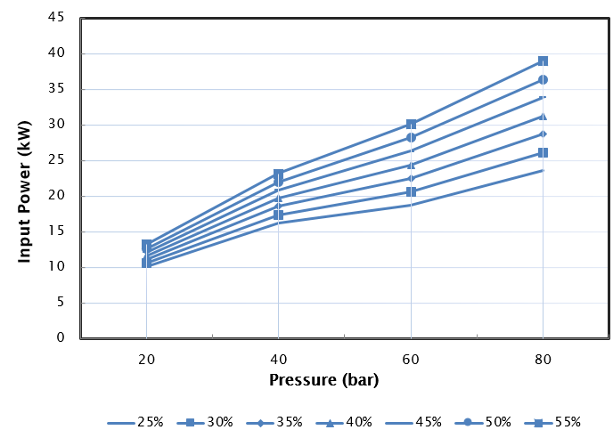
Plan the installation
Allow space for service, support the rear of the Power Centre and keep case drainage separate from the pressurised feed.
Maintain at least 3.5 bar at the inlet pressure switch port. Interlock the drive to stop if inlet pressure falls below the specified minimum.
Install horizontally with a flexible gear coupling. The rear of the unit requires support. Verify alignment and final motor/frame dimensions.
Pipe internal leakage to a low-pressure sump or drain. Confirm allowable case pressure, discharge backpressure and filtration requirements.
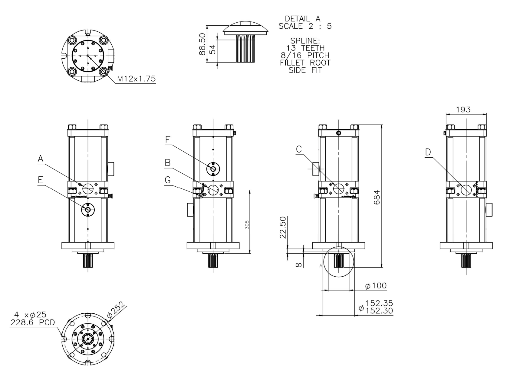
Verify final installation drawing.
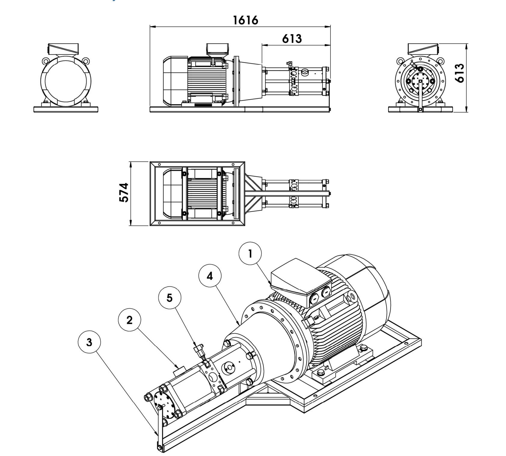
Example assembly, not to scale on screen.
Do not scale from the screen. Confirm the supplied assembly, dimensions and motor selection.
| Port | Function | Connection |
|---|---|---|
| A | Low-pressure out — energy recovery motor | 2″ SAE 4-bolt flange, 3,000 psi class |
| B | Low-pressure in — pump | 2″ SAE 4-bolt flange, 3,000 psi class |
| C | High-pressure in — energy recovery motor | 2″ SAE 4-bolt flange, 3,000 psi class |
| D | High-pressure out — pump | 2″ SAE 4-bolt flange, 3,000 psi class |
| E | Case drain — pump | ¾″ BSPP female |
| F | Case drain — energy recovery motor | ¾″ BSPP female |
| G | Inlet pressure switch | G¼″ BSPP female |
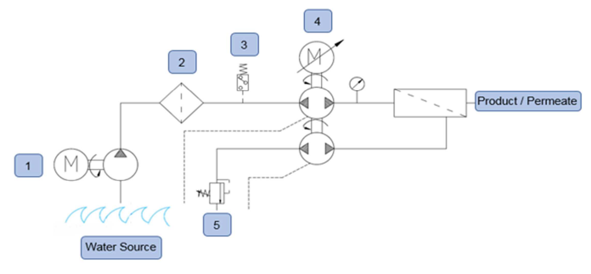
Specify your recovery
Select a recovery ratio to identify the ordering reference. Final selection also needs your required production, feed conditions and operating pressure.
35% recovery · Confirm the complete configuration with WaterQuest Solutions.
| Recovery | Order code |
|---|---|
| 25% | Confirm |
| 30% | Confirm |
| 35% | 708-001 |
| 40% | 769-001 |
| 45% | 762-001 |
| 50% | 770-001 |
| 55% | Confirm |
35–50% have listed ordering codes. Curves include 25%, 30% and 55%; their order codes are not supplied.
Where it fits
Typical applications. System suitability depends on feed-water conditions, treatment requirements and the complete RO design.
Explore the range
Compare production capacities, then confirm a model against your actual duty.
Bring your target output, feed salinity and temperature, recovery, operating hours and electrical supply. We’ll use them to establish the selection basis.